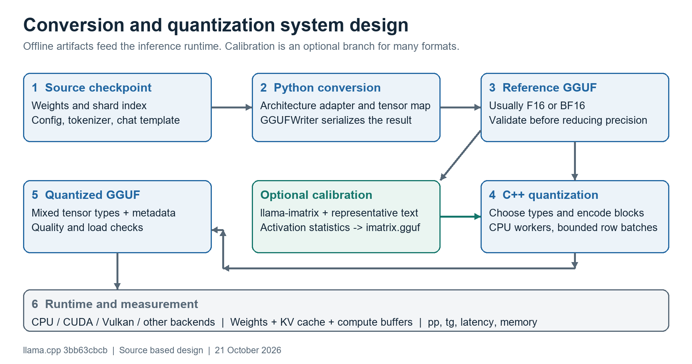
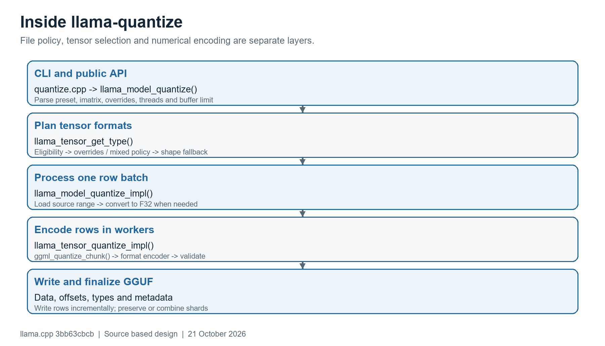
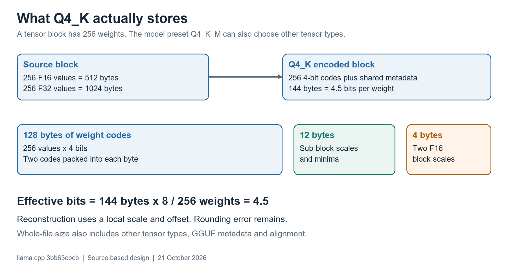
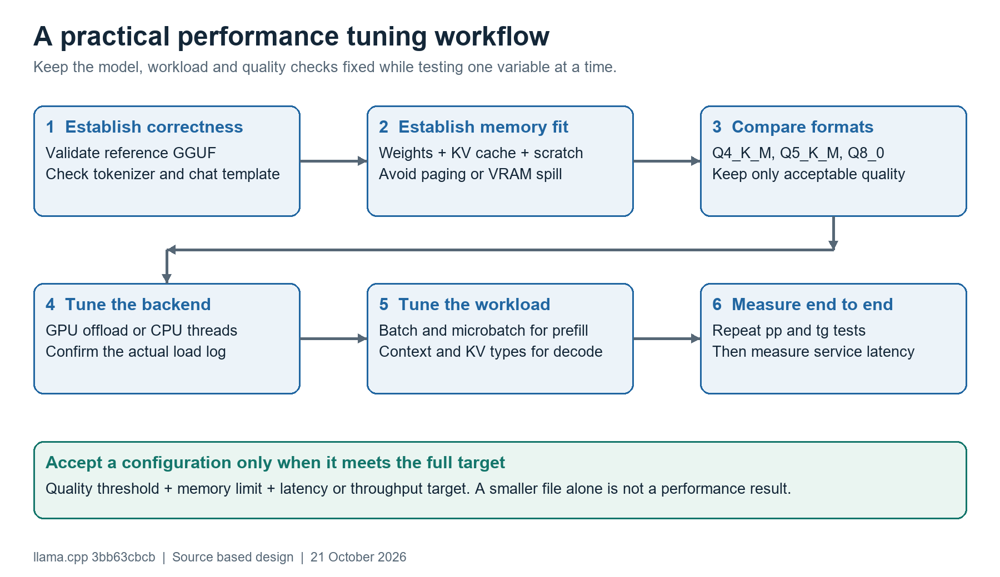

Code analysis, system design and a practical performance guide
Prepared for the developer working in D:\project\llama.cpp. Analysis date: 21 October 2026. Local revision: 3bb63cbcb dated 20 October 2026. The full revision and source links are listed at the end.
Recommended starting point: create and validate a high fidelity GGUF, then compare Q4_K_M and Q5_K_M against that reference. Choose the smallest candidate that meets your quality target and runs well on the intended hardware. Measure prompt processing and token generation separately.
Figure 1. Existing system boundaries and artifact flow. Sources: converter, GGUFWriter, quantizer and imatrix collector [1-8, 12].

Conversion translates a model into the representation llama.cpp expects. Quantization compresses selected weight tensors using numerical approximations. Inference loads those tensors and executes them through a hardware backend. These are three different performance problems.
This is a source based analysis, not a benchmark report. No model weights were converted, no inference benchmark was run, and no hardware specific speedup is claimed. Model family, CPU, GPU, RAM, VRAM and workload were not specified. Commands are examples checked against this checkout; adapt paths and resource settings before running them.
The Python and C++ stages communicate through GGUF files. This keeps model import logic separate from tensor encoding and inference backends. The current converter is modular; tutorials describing one large converter file do not match this checkout.
| Area and source | Responsibility |
|---|---|
| convert_hf_to_gguf.py:47, 186 [1] | CLI, output dtype, model selection, split options and orchestration. |
| conversion/__init__.py:423 [2] | Architecture name -> lazy module import -> registered model class. |
| conversion/base.py:125, 1130, 1400 [3] | Index source tensors; transform and select dtypes; assemble metadata; write GGUF. |
| conversion/llama.py:233 [4] | Example adapter: conditional Q/K permutation, expert stacking and tensor mapping. |
| gguf-py/gguf/tensor_mapping.py [5] | Shared mapping from checkpoint tensor names to runtime names. |
| gguf-py/gguf/gguf_writer.py:215, 443 [6] | Header, metadata, tensor descriptors, alignment, shards and payload writes. |
| tools/quantize/quantize.cpp:648 [7] | Preset names, argument parsing, imatrix loading and public API invocation. |
| src/llama-quant.cpp:743, 973 [8] | Per-tensor policy, compatibility fallback, row batches and worker scheduling. |
| ggml/src/ggml.c:8080 [9] | ggml_quantize_chunk dispatches to each numerical encoder. |
| ggml/src/ggml-quants.c:1458, 1627 [10] | Q4_K reference and importance weighted encoding paths. |
| ggml/src/ggml-common.h:323 [11] | Exact packed block layouts and compile-time size checks. |
| tools/imatrix/imatrix.cpp:561 [12] | Collect activation statistics during calibration inference. |
Start with ModelBase.write(), then prepare_tensors(), one adapter and GGUFWriter.write_tensors_to_file(). For quantization, follow the public llama_model_quantize() API into the tensor planner and ggml_quantize_chunk(). Read block_q4_K beside its encoder. Read backend kernels only after those boundaries are clear.
1. Identify the architecture. main() loads configuration and asks get_model_class() for the corresponding registered adapter. Unsupported architecture names fail; a file extension alone cannot make a model supported. [1] [2]
2. Index the weights. ModelBase.index_tensors() reads a safetensors shard index when available, checks source names, and builds tensor-producing callables. Lazy evaluation is the default. Local safetensors and remote reads have different I/O behavior; the .bin fallback uses torch.load with CPU placement, mmap and weights_only. [3]
3. Transform and map. prepare_tensors() handles supported source quantization formats, extra tensors and model-specific modify_tensors() logic. The adapter can permute, reshape, split or stack data before applying canonical names. This stage is not simply copying bytes into another container.
Example for a conventional Llama checkpoint model.layers.0.self_attn.q_proj.weight -> LlamaModel.modify_tensors() -> optional Q permutation when undo_permute is enabled -> shared name mapping -> blk.0.attn_q.weight
The exact transformation depends on the adapter and checkpoint. In the Llama adapter, Q and K permutations are conditional; sparse experts may be collected and stacked into a 3D tensor. Preserving dimensions without preserving their meaning is not enough. [4] [5]
4. Select storage precision. Norms and many one-dimensional tensors stay F32. Other tensors follow the selected file type and adapter overrides. The converter supports f32, f16, bf16, q8_0 and selected ternary outputs; Q4_K_M is produced with llama-quantize. auto inspects eligible tensor dtypes and chooses F16 or BF16, with F16 as fallback. It is a heuristic, not a universal precision guarantee. [1] [3]
5. Serialize the model contract. write() prepares tensors and metadata, then writes the header, metadata, tensor directory and payload. Configuration, tokenizer, special tokens and chat template are part of correct behavior. GGUF stores tensor names, shapes, types and offsets with aligned data. [3] [6]
Compare the converted reference with the source model on tokenization, special-token handling, prompt formatting and a small set of known tasks. Investigate wrong output in the reference first. Quantization cannot repair an incorrect tensor transformation or chat template. Models with image or audio support may also need a separately converted mmproj artifact.
Figure 2. Quantization flow in this checkout. The numerical encoder runs through CPU functions; GPU offload is relevant to calibration and inference [7-10].

Policy first. llama_ftype_get_default_type() establishes the base tensor type. Eligibility checks keep norms, small routing tensors and other excluded tensors unchanged. llama_tensor_get_type() applies explicit types or the preset policy. The normal policy path then checks whether row dimensions fit the required block size. [8]
Encoding second. For each tensor, the implementation reads a bounded batch of whole rows. Non-F32 input is converted to an F32 working buffer. Worker threads claim row chunks, call ggml_quantize_chunk(), validate the result and write encoded bytes. Threads are limited by the number of available chunks; increasing the requested count does not create more work.
MoE invariant. Worker chunks stop at expert boundaries so each row uses the correct importance-vector slice. A supplied imatrix is checked for non-finite values and expected dimensions. Required missing data causes failure for certain low-bit formats.
File completion. Tensor types and offsets are finalized in output metadata. Existing shards can be preserved with --keep-split. The public API catches errors and returns a nonzero status. Treat a failed output file as incomplete; a file appearing on disk does not establish success.
Figure 3. Q4_K block accounting derived from ggml-common.h. This is a storage calculation, not a speed or quality benchmark [11].

| Tensor format | Values per block | Bytes per block | Effective bits |
|---|---|---|---|
| F16 or BF16 | 1 | 2 | 16 |
| Q8_0 | 32 | 34 | 8.5 |
| Q4_0 | 32 | 18 | 4.5 |
| Q4_K | 256 | 144 | 4.5 |
| Q5_K | 256 | 176 | 5.5 |
| Q6_K | 256 | 210 | 6.5625 |
A simple quantizer approximates a weight with a scale times an integer code, sometimes plus an offset. Shared block metadata reduces overhead compared with storing a scale for every weight. Quantization discards information; converting the result back to floats does not recover the original weights.
Q4_K_M is a model preset, not a tensor format. Its base type is Q4_K, while selected tensors can use more bits, including Q6_K. Policies depend on tensor role, layer and architecture. Norms and other excluded tensors remain higher precision. --pure disables the preset mixtures but still does not force every tensor in the file to one type. [8]
Q4_0 and Q4_K have the same block-level bits per weight but different layouts, reconstruction behavior and kernels. File-level bits per weight varies with the tensor mix. IQ and other very low-bit formats require separate quality and backend testing; do not rank formats by the number in their name alone.
llama-imatrix runs representative text through the model and collects statistics from inputs to matrix multiplications. The collector accumulates squared activations per input channel, with additional handling for expert tensors. Its output is indexed by tensor name and channel or expert dimensions. It is not a full dense Hessian and it does not train the model. [12]
y = W x; quantized output = W_hat x output error = (W - W_hat) x Useful intuition under a diagonal approximation: expected squared output error ~= sum_j E[x_j^2] * (w_j - w_hat_j)^2
This equation explains why equal weight error can have unequal downstream impact. Channels with larger activation energy can deserve more accurate reconstruction. The actual encoders use format-specific heuristics; the equation is an explanatory approximation, not a claim that all formats solve this exact optimization problem.
Include the languages, code, structured text and instruction styles that the deployment will process. Keep evaluation examples separate from calibration data. Use the same model revision and tensor layout, and retain the corpus hash, tokenization settings, context size and chunk count with the imatrix artifact.
More calibration is not automatically better. Increase coverage when measured quality is unstable or the workload is diverse. For MoE models, inspect expert coverage; channels or experts never exercised by the corpus have weak evidence. Rebuild calibration when weights or relevant tensor layouts change.
The current default output is imatrix.gguf. Standard K-quants generally work without it, but it can improve reconstruction. Several low-bit IQ types and the relevant Q2_K_S path require it. --process-output is off by default. --no-ppl skips calibration perplexity work; perform quality evaluation separately. [8] [12]
| Signal | What it tells you | Limit |
|---|---|---|
| Perplexity difference | Next-token prediction loss relative to the same reference. | Use the same tokenizer, corpus and context settings. |
| KL divergence | How predicted token distributions differ from the reference. | Reference logit files can be large. |
| Task evaluation | Whether code, extraction, reasoning or language tasks still succeed. | A single prompt is too noisy to establish acceptable quality. |
| Behavior checks | Special tokens, template, stop behavior and structured output. | Passing syntax checks does not establish semantic accuracy. |
Select the quantization format against an explicit acceptable quality loss. Published perplexity numbers from another model are not transferable quality guarantees. [14]
Figure 4. Suggested tuning order. These are engineering recommendations to test, not measured wins on your hardware.

Prompt processing or prefill evaluates many prompt tokens. It often benefits from matrix multiplication throughput and batching. Token generation or decode usually handles one new token per sequence, often making memory traffic a major limit. Long-context attention and KV reads can change the bottleneck.
For a memory-bound dense decode, a rough ceiling is effective memory bandwidth divided by weight bytes read per token. This ignores attention, cache traffic, synchronization, compute and sampling. It explains a possible benefit of quantization; it does not predict tokens per second reliably. MoE reads only selected experts for a token, while storage may still include all experts.
First use an optimized Release build with the intended backend and verify actual offload in logs. Fit weights, the intended context cache and compute buffers in memory. Compare Q4_K_M and Q5_K_M with Q8_0 or the float reference as quality anchors. A smaller model that stays in VRAM can beat a higher precision model that spills.
Then sweep CPU thread counts instead of assuming all logical cores are best. On GPU, test sufficient offload while leaving memory headroom. Tune batch and microbatch sizes for prefill. Test Flash Attention on supported backends. Change KV cache types separately from weight types and repeat quality checks. The smallest quant may lose to a larger one with a better kernel.
For a service, also measure concurrent requests, time to first token, inter-token latency and tail latency. More concurrency may improve total throughput while slowing each request. llama-bench excludes tokenization and sampling, so its results are only one part of service performance. [13]
Runtime memory ~= resident weights + KV cache
+ compute buffers + backend overhead
Weight bytes ~= parameter count * effective bits / 8Example only: 8 billion parameters at an assumed whole-model average of 4.8 bits need about 4.8 GB or 4.47 GiB for weights. This is not an exact Q4_K_M size. Metadata, alignment, tensor mix, backend repacking and allocations affect the actual total.
For a conventional attention model with equal-size layers and separate sequence caches, approximate KV bytes as L * T * S * Hkv * (Dk * Bk + Dv * Bv). L is layers, T retained tokens per sequence, S sequences, Hkv KV heads, Dk/Dv head dimensions, and Bk/Bv bytes per cache element. Quantized cache block overhead and runtime allocation rules modify this estimate.
Example: 32 layers, 4096 retained tokens, one sequence, 8 KV heads, 128-dimensional K and V, and two bytes per element give 512 MiB. Four separately allocated sequences give 2 GiB. Shared cache capacity, sliding windows, MLA, recurrent layers and hybrid models need different accounting. Use runtime allocation logs for the final budget.
Use local SSD storage for repeated work and retain a clean source snapshot. Keep lazy evaluation enabled. --no-lazy computes more output eagerly and can sharply increase RAM use. --use-temp-file trades memory for temporary storage and I/O; this converter rejects combining it with split output. Splitting bounds files at tensor boundaries, so it is not a strict RAM cap or a guarantee that every shard stays under a limit. [1] [3] [6]
The --remote path avoids keeping a full local source copy but introduces network dependence. F32 output is larger than F16/BF16 and cannot restore precision missing in the source. Use F32 when a fidelity investigation needs it. Do not enable tensor fusion options indiscriminately; their benefit and compatibility depend on the model and runtime.
This revision processes rows in bounded batches. --max-buffer-size is in MiB, with a default of 8192. Try a smaller value such as 512 or 1024 when RAM is tight, then measure wall time and peak memory. The budget guides row buffering; it is not a hard process RSS limit. Imatrix data, mappings, retained buffer capacity and other allocations remain, and at least one whole row must fit. [7] [8]
The quantizer uses mmap on Windows and Linux without prefetching, reuses conversion/output buffers and releases mapped weights as it progresses. Thus the README statement equating RAM needs with full model size is not a reliable description of this implementation. File cache and cold versus warm reads still affect results. CPU workers, memory bandwidth and storage can all limit offline quantization.
Run these examples from the repository root in PowerShell. Replace paths with a supported model snapshot containing config, tokenizer files and every weight shard. The examples assume a multi-configuration Windows build that places executables in build\bin\Release. Ninja may use build\bin instead. These commands were reviewed against source and were not executed with a model.
cmake -S . -B build cmake --build build --config Release -j 8 python -m venv .venv & .\.venv\Scripts\python.exe -m pip install ` -r .\requirements\requirements-convert_hf_to_gguf.txt $bin = ".\build\bin\Release" $py = ".\.venv\Scripts\python.exe" $source = "D:\models\hf-model" $out = "D:\models\converted" New-Item -ItemType Directory -Force -Path $out
For NVIDIA inference, configure an appropriate build with -DGGML_CUDA=ON and an installed supported CUDA toolchain. Vulkan is another backend option with its own SDK requirements. Choose the backend for your hardware; building CUDA does not turn the offline quantizer into a GPU encoder. [15]
& $py .\convert_hf_to_gguf.py $source ` --outtype auto --outfile "$out\model-reference.gguf" & "$bin\llama-quantize.exe" --dry-run ` "$out\model-reference.gguf" Q4_K_M
Use --outtype bf16 or f16 explicitly when that choice is justified by the source. For native NVFP4/MXFP4 and other pre-quantized checkpoints, inspect the adapter path: some packed tensors may be preserved or repacked. An output filename or auto option does not establish a fully floating-point reference. Prefer original high precision weights for controlled comparisons. [3]
foreach ($q in @("Q4_K_M", "Q5_K_M", "Q8_0")) {
& "$bin\llama-quantize.exe" --max-buffer-size 1024 `
"$out\model-reference.gguf" "$out\model-$q.gguf" $q 8
if ($LASTEXITCODE -ne 0) { throw "Quantization failed: $q" }
}Use separate output names and check the exit code after every stage. Quantize every candidate from the same reference. Avoid Q8 -> Q4 -> Q3 chains; --allow-requantize is an explicit escape hatch with additional quality loss, not a normal workflow. The thread count 8 is only an initial test value.
Continue with the PowerShell variables from the previous page. Dataset filenames below are placeholders for your own representative calibration text and separate evaluation text. Use an offload setting that fits the reference model; -ngl 0 is the CPU-only starting point.
& "$bin\llama-imatrix.exe" ` -m "$out\model-reference.gguf" -f .\calibration.txt ` -o "$out\imatrix.gguf" -c 512 --chunks 32 --no-ppl -ngl 0 & "$bin\llama-quantize.exe" --imatrix "$out\imatrix.gguf" ` --max-buffer-size 1024 "$out\model-reference.gguf" ` "$out\model-Q4_K_M-imatrix.gguf" Q4_K_M 8
512 tokens and 32 chunks are illustrative starting values, not a universal calibration recipe. Increase corpus coverage based on quality evidence. GPU offload can accelerate the model forward passes used by imatrix when the selected device and memory permit. [12]
& "$bin\llama-bench.exe" -m "$out\model-Q4_K_M.gguf" ` -p 512 -n 128 -t "4,8" -ngl 0 -r 5 -o json ` > "$out\bench-q4-cpu.json" # GPU example; first ensure the model and context fit. & "$bin\llama-bench.exe" -m "$out\model-Q4_K_M.gguf" ` -p 512 -n 128 -ngl 999 -fa on -r 5 -o json ` > "$out\bench-q4-gpu.json"
Repeat for Q5_K_M and other candidates under identical settings. Use -d to test existing context depth; an empty-cache decode test does not represent a long conversation. Sweep -b and -ub for prefill in a separate experiment. In this checkout Flash Attention uses on/off/auto; check --help when using another build. [13]
& "$bin\llama-perplexity.exe" ` -m "$out\model-reference.gguf" -f .\evaluation.txt ` -c 512 -ngl 0 & "$bin\llama-perplexity.exe" ` -m "$out\model-Q4_K_M.gguf" -f .\evaluation.txt ` -c 512 -ngl 0
Keep tokenizer, corpus, context, backend settings and evaluation method consistent. Add task success rates and structured-output checks. If using KL divergence, record reference logits and compare with the documented --kl-divergence workflow; plan disk space for those logits. [14]
| Record | Minimum useful content |
|---|---|
| Inputs | Model ID and revision, source hashes, tokenizer/template revision, calibration and evaluation corpus hashes. |
| Toolchain | llama.cpp commit, Release/debug setting, CMake backend flags, compiler, Python dependencies and driver. |
| Artifact | Reference hash, imatrix hash, exact quantization command, tensor override policy, output size and SHA256. |
| Workload | Prompt length, generated tokens, context depth, sequence count, concurrency, batch and microbatch. |
| Performance | pp tokens/s, tg tokens/s, repetitions and spread, cold/warm load time, peak RAM/VRAM, end-to-end latency. |
| Quality | Reference and candidate perplexity, optional KL, task pass rate and behavioral regressions. |
Use stable artifact names such as model revision plus quantization preset and calibration version. Keep the reference immutable. Write new outputs to a staging location, validate them, then promote the selected artifact. Preserve logs so shape fallbacks and unexpected tensor types are visible.
Use a job record for each conversion or quantization run. Track states such as queued, converting, validating reference, calibrating, quantizing, evaluating and ready. Store artifacts by hash and keep a manifest connecting them. Admission control should consider disk and RAM as well as CPU threads; several simultaneous quantizers can fight for the same memory bandwidth.
Keep calibration and evaluation datasets versioned separately. Rerun only the stages whose inputs changed. This is a suggested orchestration design around the existing CLI tools, not an additional service implemented by llama.cpp.
Preserve a trustworthy baseline. Validate conversion before tuning numerical precision. Retain original high precision weights if available; do not assume a BF16 filename means the source was never quantized.
Control the experiment. Warm up, repeat measurements, record thermal or power constraints, and avoid other heavy workloads. Distinguish a cold filesystem cache from steady-state inference. Choose one goal: latency, aggregate throughput, memory, or offline processing time.
Let evidence justify complexity. Start with standard presets. Try selective tensor overrides only after locating a quality or performance issue. Keep original metadata unless a specific documented change is required. Pruning layers and changing expert counts are separate model modifications with separate validation needs.
| Observation | First checks |
|---|---|
| Converted reference gives poor answers | Architecture adapter, tokenizer, special tokens, template, tensor layout and source completeness. |
| Conversion runs out of RAM | Lazy evaluation enabled, temporary-file option, adapter buffering, source dtype and free disk. |
| Quantization runs out of RAM | Lower row-buffer budget; inspect imatrix size, resident mappings, other jobs and peak process memory. |
| Output is larger than expected | Mixed tensor policy, large embeddings, preserved F32 tensors and shape fallback warnings. |
| Low-bit quantization fails | Required imatrix entries, exact tensor names, dimensions, non-finite values and model revision. |
| GPU inference is unexpectedly slow | Actual backend/offloaded layers, VRAM headroom, CPU fallback, transfer overhead and supported kernels. |
| More CPU threads make it slower | Bandwidth saturation, oversubscription, affinity, NUMA placement and other active jobs. |
| Long prompts use too much memory | KV cache capacity, concurrent sequences, batch/microbatch, Flash Attention and architecture-specific caches. |
1. Tensor basics: shapes, strides, contiguous memory, row-major interpretation, reshape versus transpose, and matrix multiplication. These explain why tensor naming and layout conversion must agree with the runtime.
2. Numerical formats: F32, F16 and BF16 exponent/precision tradeoffs; integer codes, block scales, offsets, rounding, clipping, outliers and quantization error. BF16 and F16 both use 16 bits but have different numerical behavior.
3. Transformer inference: tokenization, embeddings, attention Q/K/V, RoPE, feed-forward layers, GQA, MoE routing, prefill, decode and KV caching. Learn which components dominate your model, rather than assuming all architectures behave like Llama.
4. Systems performance: memory bandwidth versus compute throughput, cache locality, SIMD, GPU kernels, CPU/GPU transfers, mmap, page faults, NUMA, batching and concurrency. Storage bit width does not uniquely determine arithmetic precision.
5. Evaluation and reproducibility: held-out data, perplexity, KL divergence, task success, repeated measurements, confidence in a result, hashes and versioned artifacts. Quality and speed must be evaluated together.
A useful code exercise is to explain all 144 bytes of block_q4_K, trace one attention weight through conversion, and identify which runtime kernel consumes it. For the CPU path, Q4_K dot-product traits select Q8_K for the paired activation representation; other backends can use different strategies. [16]
The local working tree was clean when inspected. Code references below point to the exact inspected revision in the configured fork. Symbol names and line numbers are supplied so the same locations can be found locally. Current upstream documentation was also consulted; implementation claims are anchored to this checkout.
Full revision: 3bb63cbcbfb62056c84fe9e521b0f3d756d29c32
[1] CLI and conversion orchestration
convert_hf_to_gguf.py:47
[2] Architecture registry and module loading
conversion/__init__.py:423
[3] Tensor indexing, conversion and metadata
conversion/base.py:1130
[4] Llama model adapter
conversion/llama.py:233
[5] Canonical tensor name mapping
gguf-py/gguf/tensor_mapping.py
[6] GGUF serialization and state transitions
gguf-py/gguf/gguf_writer.py:215
[7] Quantizer CLI and buffer-size option
tools/quantize/quantize.cpp:165
[8] Tensor policy and bounded row quantization
src/llama-quant.cpp:743
[9] Quantization type dispatch
ggml/src/ggml.c:8080
[10] Q4_K numerical encoders
ggml/src/ggml-quants.c:1458
[11] Quantized block storage layouts
ggml/src/ggml-common.h:323
[12] Activation statistics and calibration usage
tools/imatrix/imatrix.cpp:561
[13] Benchmark measurements and limitations
tools/llama-bench/README.md
[14] Perplexity and KL evaluation
tools/perplexity/README.md
[15] Backend build instructions
docs/build.md
[16] CPU quantized dot-product type traits
ggml/src/ggml-cpu/ggml-cpu.c:311
GGUF format specification explains the container layout. The upstream quantization guide describes the standard workflow. For current calibration flags, consult this revision of the imatrix README.
All size examples are calculations with stated assumptions. Tuning order and artifact-management suggestions are recommendations derived from the code and performance model. No accuracy or throughput measurements were fabricated. The separate PNG and SVG figures are original diagrams of the inspected system.